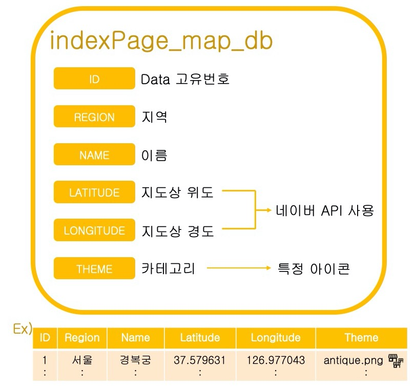

Map_DB

어디가? 페이지에서 지도에 랜덤한 지역을 마킹할 때 사용되는 데이터베이스입니다.
데이터베이스 내용 보기
| id | resion | name | latitude | longitude | theme |
|---|
| 1 | 서울 | 경복궁 | 37.579631 | 126.977043 | antique.png |
| 2 | 서울 | N서울타워(남산타워) | 37.551178 | 126.988227 | tower.png |
| 3 | 서울 | 북촌한옥마을 | 37.582494 | 126.983648 | antique.png |
| 4 | 서울 | 코엑스 | 37.513082 | 127.058609 | building.png |
| 5 | 서울 | 롯데월드 | 37.511042 | 127.098171 | amusement.png |
| 6 | 서울 | 홍대 | 37.551584 | 126.924975 | school.png |
| 7 | 서울 | 건대 | 37.540985 | 127.079333 | school.png |
| 8 | 서울 | 서울 숲 | 37.544388 | 127.037444 | tree.png |
| 9 | 서울 | 여의도 한강공원 | 37.528426 | 126.934301 | river.png |
| 10 | 서울 | 동대문 디자인 플라자 | 37.566771 | 127.009513 | shopping.png |
| 11 | 부산 | 다대포 해수욕장 | 35.046865 | 128.966201 | water.png |
| 12 | 부산 | 해상 케이블카 | 35.076381 | 129.023603 | attraction.png |
| 13 | 부산 | 아홉산 숲 | 35.28712 | 129.171505 | tree.png |
| 14 | 부산 | 감천 문화마을 | 35.097401 | 129.010591 | antique.png |
| 15 | 부산 | 오륙도 스카이워크 | 35.100704 | 129.124574 | attraction.png |
| 16 | 대구 | 앞산공원 전망대 | 35.825322 | 128.579415 | tower.png |
| 17 | 대구 | 서문야시장 | 35.868693 | 128.580235 | shopping.png |
| 18 | 대구 | 스파벨리 | 35.788051 | 128.635442 | water.png |
| 19 | 대구 | 아르떼 수성랜드 | 35.826768 | 128.613248 | amusement.png |
| 20 | 대구 | 봉무공원 | 35.920227 | 128.649916 | river.png |
| 21 | 인천 | 계양꽃마루 | 37.53554 | 126.746696 | tree.png |
| 22 | 인천 | 송도 센트럴공원 | 37.392372 | 126.638459 | river.png |
| 23 | 인천 | 을왕리 해수욕장 | 37.447708 | 126.372506 | water.png |
| 24 | 인천 | 마니산 | 37.612334 | 126.434741 | mount.png |
| 25 | 인천 | 차이나타운 | 37.476414 | 126.618192 | china.png |
| 26 | 광주 | 호수생태원 | 35.18558 | 127.000097 | tree.png |
| 27 | 광주 | 국립 광주 박물관 | 35.189102 | 126.883072 | museum.png |
| 28 | 광주 | 우치공원 | 35.223924 | 126.891628 | amusement.png |
| 29 | 광주 | 양림 역사 문화 마을 | 35.140415 | 126.915662 | antique.png |
| 30 | 광주 | 무등산 | 35.144289 | 126.988994 | mount.png |